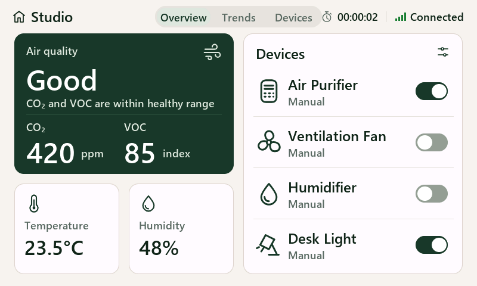
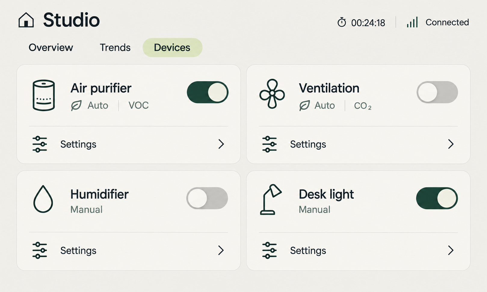
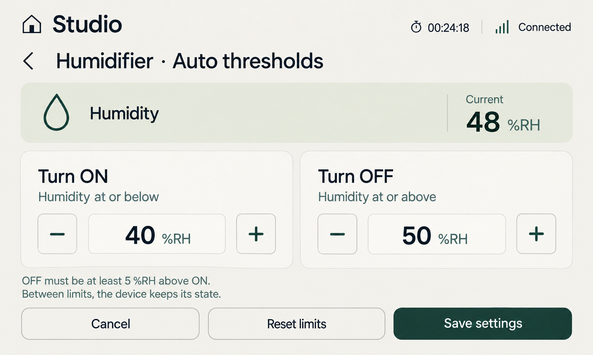
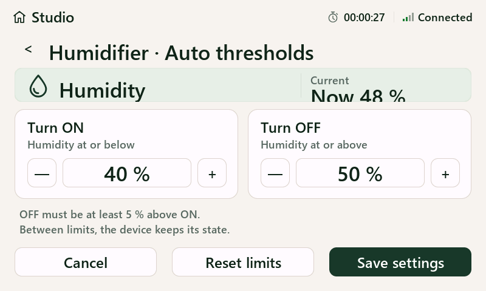

Quiet Architecture: Approved Concepts vs Native LVGL v8.4 Renders
2026-09-18 — Final Fidelity & Verification Closure. Read Final Report · Active Spec.
All native renders are captured directly from 800×480 RGB565 framebuffers in the LVGL simulator, running under the strict 42 KiB heap budget and single 800×10 partial draw buffer. All visible fonts strictly obey the ≥ 18px contract.
1. Overview (Dashboard)
Forest hero card (#1D3B2E) with large "Good" verdict (48px) and dual CO₂/VOC columns; lower porcelain tiles (176×152) for Temperature and Humidity; right porcelain card (368×404) with outline appliance icons (44px), aligned name/mode, and switches.


2. Trends
Four selectable metric cards on the left (240×92 each) with live readings and active forest card indicator; right porcelain chart card (496×400) with Current/Min/Max prominent metrics, 18px axes, and single clean data series line.


3. Devices (2×2 Grid)
Four porcelain cards (368×192) with 44px outline appliance icons, aligned title and mode column, switch at top-right, fine separator, and full-width Settings row with sliders icon and chevron.


4. Device Settings
Contextual header with unboxed back chevron; four clean form rows with leading outline icons and fine separators; visible outlined dropdown, segmented Manual/Auto selector, threshold summary with chevron, and segmented Active high / Active low polarity; symmetrical Cancel and Save actions.


5. Auto Thresholds — CO₂ (Ventilation Fan)
Contextual title with unboxed back chevron; celadon strip with fan icon, sensor title, vertical divider, and live reading; two equal limit cards with outlined value boxes and 48px stepper buttons; symmetrical Cancel, Reset limits, and Save settings footer.


6. Auto Thresholds — Humidity (Humidifier)
Reversed comparison rules (Turn ON at or below, Turn OFF at or above); consistent % unit notation; stable layout matching the Quiet Architecture composition.


7. Auto Thresholds — Invalid Draft State (Air Purifier VOC ON=OFF=150)
Exact matched-state capture: Air Purifier (VOC) with draft ON=150 and OFF=150 violating the minimum gap (≥ 5). Outlined value fields switch to error outline (#C93B2B) with zero card-border reflow; warning icon with cause and repair instructions; noninteractive disabled Save button.